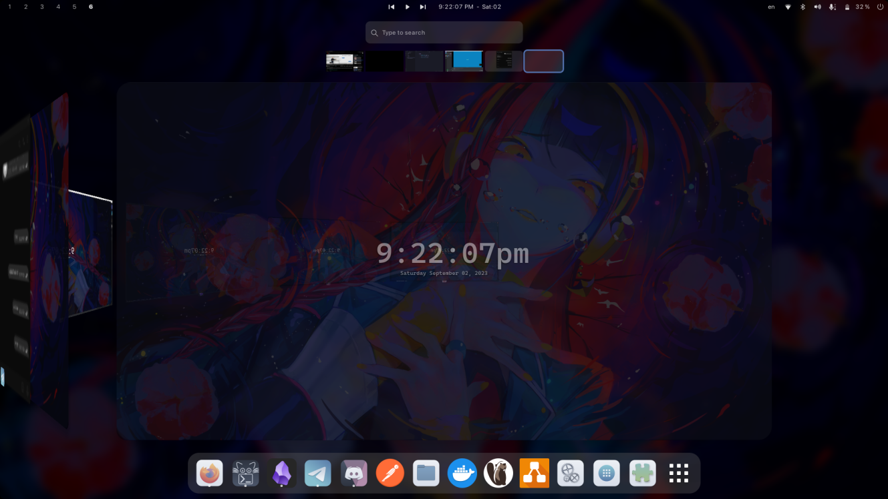
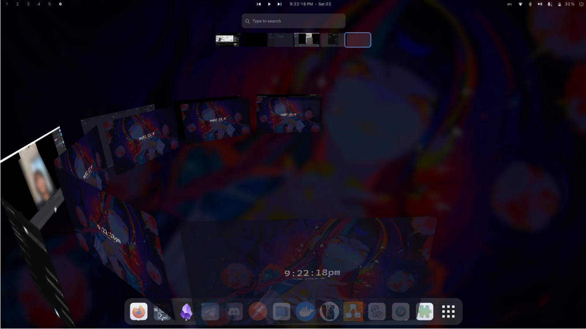
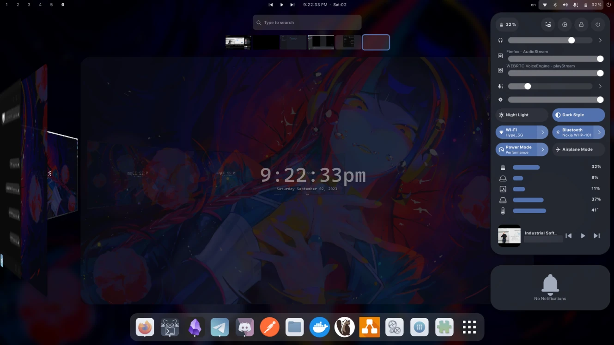

How I started using NixOS
A personal account of distro-hopping, window managers, and eventually switching away from Arch Linux.
Part 1: How It All Started
I started using Linux about four years ago. My very first distribution was Fedora, followed shortly by Ubuntu, which I used for about a month before moving on to Fedora again. The main reason I left Ubuntu was its interface — I simply didn’t like it. But beneath that was a deeper frustration: bloat. Ubuntu shipped with so much pre-installed software that, as someone still finding their footing with Linux, I felt completely lost. I tried removing things, but the sheer volume of it all was overwhelming.
That’s what led me to Fedora. I’d heard it was a more “advanced” distribution, and that reputation drew me in. On Fedora, I quickly fell into the rabbit hole of GNOME customization — tweaks, extensions, hours spent adjusting every small detail. I even have screenshots from that period: early evidence of what would become a lasting obsession.



But the same core frustration eventually resurfaced on Fedora too. I still felt like I didn’t have real control over my system. I wanted to choose exactly what went on it — from the display protocol to the window manager to individual applications. And that desire led me to Arch Linux.
Part 2: Entering Arch Linux
The appeal of Arch Linux is something many Linux users will recognize immediately: a minimal base, total control, and the expectation that you actually know what you’re doing. I started using it about three and a half years ago, and from the beginning it felt like exactly the right fit.
The first thing I wanted to try was something I’d been experimenting with near the end of my time on Fedora — switching from a full desktop environment to a standalone window manager. The timing felt perfect: a new operating system and a new way of interacting with my desktop. I set up bspwm on X11, with Polybar as my status bar and Zsh as my shell, complete with plugins and extensions. It worked exactly the way I wanted.
Part 3: Going Wayland — Hyprland and Finding My Tools
About three years ago, I decided to make the switch to Wayland. At the time, it was still less common than it is today — it felt more like an enthusiast choice than a mainstream one. I started using Hyprland as my compositor, paired with Waybar, and I’ve been refining that configuration ever since.
Over those three years, I did a lot of experimenting with tooling. On the terminal side, I tried Alacritty, Kitty, Foot (a minimal terminal written in C), and Ghostty (a newer one written in Zig by Mitchell Hashimoto). For shells, I gave Fish a serious try before returning to Zsh. After all of that, I settled on Kitty as my primary terminal — mainly because it supports inline image rendering, which matters a lot to me since I use the terminal for almost everything: file browsing, listening to music, watching videos, and more. I still admire Alacritty’s minimalist philosophy, but the lack of image support is a dealbreaker for my workflow.
Part 4: Why I Left Arch Linux
After three and a half years, two things pushed me away from Arch.
Crashes and Fragility
I experienced two major system failures during my time on Arch. I’m the kind of user who constantly tinkers — trying new packages, removing old ones, cleaning the cache, experimenting with obscure forks and unofficial software. Most of the time this was fine. But I also had periods where I skipped updates for a month or two, made changes in the meantime, and then ran a large update all at once. The last time this happened, something went wrong with the bootloader and the system simply refused to boot.
With no access to a browser, I was reduced to typing error messages into my phone to search for answers. It wasn’t catastrophic — it was even a genuinely valuable learning experience — but it was frustrating enough that I didn’t want to repeat it.
System Rot and the Imperative Model
The deeper issue, though, wasn’t the crashes.
Over time, I noticed that my Arch system no longer resembled what I’d originally installed. Three and a half years of updates, deletions, installations, and tweaks had left it in a state I couldn’t fully account for. Even with regular cache cleaning and orphan package removal, the system had drifted. It had become unpredictable. I think of this as system rot — arguably just the natural lifecycle of any OS, but something I found genuinely frustrating to accept.
Part of the problem is how traditional Linux distributions handle configuration. The model is fundamentally imperative: you run commands, set flags, edit files, and hope you remember everything you did. Some things can be managed declaratively through config files, and if you’re disciplined, you collect those in a dotfiles repository and manage them with symlinks. But plenty of things can’t be handled that way, which means you end up with shell scripts, install scripts, and a patchwork of automation that needs constant maintenance.
My own install script almost never worked cleanly. Even on a minimal system, getting back to my previous state after a reinstall took around 30 minutes — and always involved surprises, because I knew I hadn’t captured everything. Some changes were simply lost to time.
Part 5: Discovering NixOS
I’d known about NixOS for a while. A friend introduced me to it roughly three years ago, when I was just starting out with Arch, and it kept coming up in conversations and articles after that. A few months ago, after a particularly frustrating session with my install script, I decided to properly look into it.
It turned out to be exactly what I was looking for.
The core appeal of NixOS is its declarative, purely functional approach to system configuration. Your entire system — packages, services, user settings, dotfiles — is defined in configuration files. The practical results of this are significant:
- Reproducibility: you can rebuild your exact system on any machine in minutes.
- Atomicity: updates either fully succeed or fully roll back. No more half-broken states.
- Accountability: every change is explicit and traceable. The system doesn’t drift.
For someone who had spent years fighting system rot, this felt like a revelation.
That said, NixOS isn’t without its challenges. The Nix language has a steep learning curve. Documentation can be inconsistent. And because there are often multiple ways to solve the same problem, finding the right approach can sometimes take hours. But that’s true of mastering any complex tool — and I went through the same experience when I first started with Arch Linux.
I’ve now been using NixOS for about three to four weeks. My expectations going in were perhaps a little too idealistic — no tool is a silver bullet. But the core idea is genuinely powerful, and I believe that with enough investment, it comes remarkably close to one.
Part 2 will cover my first month of daily use: what worked, what surprised me, and where the rough edges are.